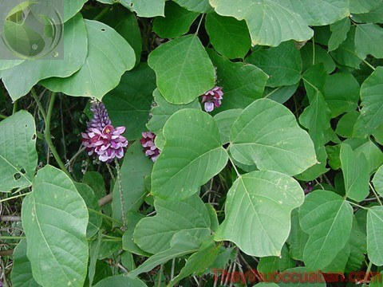

Tên khác
Tên thường gọi: Còn gọi sắn dây, cam cát căn, phấn cát, củ sắn dây
Tên khoa học: Pueraria thomsoni Benth.
Họ khoa học: Họ Cánh Bướm (Fabaceae).
Cây cát căn
(Mô tả, hình ảnh cây cát căn, thu hái, chế biến, thành phần hoá học, tác dụng dược lý ....)
Mô tả:

Địa lý:
Mọc hoang, trồng khắp nơi.
Thu hái:
Trồng vào tháng 3-4 đến hết tháng 11 đã có thể đào lấy củ, biến chế thành dược liệu để bán hay dùng. Cây trồng 2 năm thì ra hoa, tháng 5-7 lúc bông (chùm) hoa đã có 2/3 hoa nở có thể hái phơi khô bán hay dùng.
Phần dùng làm thuốc:
Dùng rễ (thường gọi là củ), hình trụ đường kính không đều vỏ có màu trắng đục, thường cắt và bổ dọc thành từng miếng trắngvàng.
Mô tả dược liệu:
Rễ cát căn thể hiện hình viên trụ không
đều, vỏ ngoài màu tím nâu hoặc đỏ nâu có vết nhăn dọc thành, dược liệu
thường phiến dầy hay mỏng hình khối vuông, màu xám trắng, hoặc màu vàng
trắng có nhiều chất xơ rất dễ tước ra thành dạng sợi, phần nhiều là màu
trắng. Dùng sắc màu trắng phấn mịn là thứ tốt. Xơ nhiều, bột ít là loại
thứ phẩm.
Xơ nhiều, bột ít là loại
thứ phẩm.
Bào chế:
(1) Khúc củ: Ở Quảng Đông, Quảng Tây, Phúc Kiến (Trung Quốc) người ta đem củ về rửa sạch, lấy dao cạo sạch lớp vỏ thô xốp ở ngoài, xong cắt thành những đoạn ngắn 13cm, xếp vào trong vại, dùng nước muối đặc (Cứ 100 đoạn Sắn dây thì dùng 5kg muối pha với 10 kg nước), ngâm nửa ngày. Sau lại pha thêm một ít nước (ngâm nước lúc ngập củ là được) ngâm đủ 1 tuần thì vớt ra, dùng sọt đem ra sông ngâm 3-4 giờ vớt ra rửa sạch, phơi 2-3 ngày (Khô đi độ 6-7 phần) lại bỏ vào hòm, xông Lưu hoàng trong hai ngày đêm, làm cho củ mềm và trong, tất cả thành màu trắng bột không có lõi vàng nữa, thì có thể lấy đem phơi thật khô để dùng hay bán. Có lúc phải dùng xông đi xông lại 3 lần, mỗi lần mất 1 ngày, phơi hai ngày. Qua ba lần xông ba lần phơi như vậy rất phức tạp, lại khó xông cho củ trở thành trắng trong, theo kinh nghiệm thì nếu loại củ nào xông một lần mà trong ruột củ trắng trong là tốt nhất.
(2) Khoanhcủ: Ở tỉnh Tứ Xuyên, tức là sau khi gọt bóc vỏ ngoài ra, cắt thành miếng vuông dầy 1,7-3cm, đuôi củ nhỏ chỉ cắt khúc, sau khi dùng Lưu hoàng xông thì đem sấy khô ngay là được.
(3) Miếng vuông: Cũng là một cách chế biến của tỉnh Tứ Xuyên, tức là sau khi gọt bóc vỏ ngoài ra, cắt thành miếng vuông dầy (cạnh) 1,7-3cm, sau khi xông Lưu hoàng xong đem sấy khô ngay là được.
(4) Ngoài ra có nơi đào về bóc bỏ lớp vỏ bên ngoài, cắt thành khúc dài 8-15cm nếu đường kính quá lớn thì bổ dọc thành 2 nửa, có khi cắt lát thành từng miếng dầy 0,5-1cm xông Lưu hoàng 3 lần, sau đó ngày phơi nắng, tối sấy Lưu hoàng cho tới khô. Nếu muốn lấy bột thì say nhỏ gạn lấy tinh bột lọc đi lọc lại nhiều lần rồi sấy hoặc phơi khô.
(5) Cách chế bột sắn dây: Cạo vỏ xay gĩa cả củ nát bấy, lọc lấy nước ở trong đổ nước lạnh vào rồilấy khăn mà lọc cho sạch xác, bụi bặm, đất, cát căn rồi để lắng xuống mới gạn lọc nước trên cứ như thế mỗi ngày thay nước một lần, mỗi khi đổ nước vào một lần phải lọc những nước đục đi, gạn lọc như thế 1 tháng đến khi nào thấy nước trong khuấy không đục nữa thì thôi. Lọc càng kỹ bột nước mới khỏi chua, chát, bột trắng, nhưng phải thay nước hàng ngày, bột không chua. Khi đã xong đổ bột ra miếng vải băng để trên sạp khô phơi thành bột cất dùng.
Bảo quản:
 Đậy kín nơi khô ráo. Dễ mốc mọt, tránh ẩm.
Đậy kín nơi khô ráo. Dễ mốc mọt, tránh ẩm.
Thành phần hóa học:
+ Puerarin, Puerarin – Xyloside, Daidzein, Daidzin, b-Sitosterol, Arachidic acid (Trung Dược Học).
+ Daidzein, Daidzin, Puerarin, 4’-Methoxypuerarin, Daidzein-4’, 7-Diglucoside (Chương Dục Trung, Dược Vật Phân Tích Tạp Chí 1984, 4 (2): 67).
+ Daidzein-7-(6-O-Malonyl)-Glucoside (Hirakura K và cộng sự, C A 1990, 112: 42557y).
+ Genistein, Formononetin, Daidzein-8-C-Apiosyl (1®6)-Glucoside), Genistein-8-C-Apiosyl (1®6)-Glucoside), Puerarinxyloside, PG 2, 3’-Hydroxypuerarin PG-1, 3’-Methyoxypuerarin, PG-3 (Kinjio J và cộng sự, Chem Pharm Bull, 1987, 35 (12): 4846).
Tác dụng dược lý:
 + Tác dụng Giải nhiệt:
+ Tác dụng Giải nhiệt:
. Trên súc vật thực nghiệm, nước sắc Cát căn có tác dụng giải nhiệt mạnh (‘Nghiên Cứu Dược Lý Tác Dụng giải Nhiệt Một Số Thuốc Trung Y’, Trung Hoa Y Học Tạp Chí 1956, 42 (10): 964-967).
. Nước sắc loại Cát căn mọc ở Nhật Bảncó tác dụng hạ nhiệt đối với thỏ được gây sốt nhân tạo (Trung Dược Học).
+ Tác dụng gĩan cơ: Chất Daidzein có tác dụng gĩan cơở ruột của chuột, tương tự như chất spasmaverine (Trung Dược Học).
+ Tác dụng đối với tim mạch: Chích chất Puerarin vào động mạch cảnh trong của chó được gây mê, thấy tăng lưu lượng máu trong não và giảm sức đề kháng của mạch máu. Tác dụng này kéo dài khoảng 20 phút. Chích tĩnh mạch có tác dụng nhẹ hơn và không thể so sánh với hiệu quả của Epinephrin hoặc Norepinephrine. Cát căn thường làm tăng lưu lượng máu trong não người bị xơ vữa động mạch. Chất Tincture hoặc chất Puerarin của Cát cănlàm tăng lưu lượng máu trong động mạch vành của chó (Trung Dược Học).
+ Điều trị huyết áp cao: Dựa vào công trình theo dõi điều trị dài ngày việc dùng Cát căn trị cổ gáy cứng, đau do ngoại nhân, cho thấy nước sắc Cát căn có tác dụng đối với chứng gáy cứng đau do huyết áp cao gây nên. Nước sắc Cát căn cho thấy 33% bớt các triệu chứng chủ quan, có tiến triển đối vơi 58%. Thuốc cũng đồng thời cải thiện các triêïu chứng khác như chóng mặt, đầu đau, tự nó không có tác dụng đối với huyết áp thấp (Trung Dược Học).
+ Điều trị rối loạn ở động mạch vành: Nghiên cứu dùng nước sắc Cát căn cho thấy thuốc có một số tác dụng đối với chứng đau thắt ngực. Kết quả cho thấy 38%có cải thiện, 42% có cải thiện điện tâm đồ. Thường các dấu hiệu cải thiện xẩy ra trong khoảng 1 tháng. Hiệu quả không rõ lắm đối với bất cứ trường hợp giảm Cholesterol (Trung Dược Học).
+ Dùng trong tai mũi họng: Nước sắc Cát căn cho 33 ca điếc đột ngột uống mỗi ngày, kèm uống thêm Vitamin B complex. Kết quả 9 ca khỏi, 6 ca có dấu hiệu tiến triển (Trung Dược Học).
+ Gĩan động mạch vành: Kết quả thực nghiệm cho thấy, nước sắc Cát căn có tác dụng đối kháng với nội kích tố thùy sau, gây phản ứng thiếu máu cơ tim cấp (‘Nghiên Cứu Thực Nghiệm Và Ứng Dụng lâm Sàng Vị Cát Căn Phòng trị Bệnh Tâm Phế, Bệnh Mạch Vành và Huyết Áp Cao’, Trung Hoa Y Học Tạp Chí 1972, 42 (10): 96-102).
+ Có tác dụng tăng lượng huyết ở não do làm gĩan mạch não trên súc vật thực nghiệm (Trung Hoa Y Học Tạp Chí 1972, 42 (10): 96-102).
+ Nước sắc Cát căn có tác dụng thu liễm, tiêu viêm, làm gĩan co thắt của cơ (Sổ Tay Lâm Sàng Trung Dược).
Vị thuốc cát căn
(Công dụng, Tính vị, quy kinh, liều dùng .... )
Tính vị:

+ Vị ngọt, tính bình (Bản Kinh).
+ Không độc, nước cốt rễ dùng sống rất hàn (Biệt Lục).
+ Vị ngọt, cay, tính bình, không độc (Bản Thảo Cương Mục).
+ Vị ngọt, cay, tính mát (Trung Dược Học).
+ Hoa có vị ngọt tính bình (Trung Quốc Dược Học Đại Từ Điển).
+ Vị cay, ngọt, tính bình (Đông Dược Học Thiết Yếu).
Qui kinh:
+ Vào kinh Vị, Phế (Bản Thảo Tân Biên).
+ Vào kinh Vị, Tỳ (Bản Thảo Cầu Chân).
+ Vào kinh Tỳ, Vị (Trung Dược Đại Từ Điển).
+ Vào kinh Vị, Bàng quang, Tỳ (Yếu Dược Phân Tễ).
+ Vào kinh Tỳ, Vị (Trung Dược Học).
+ Vào kinh Vị, Bàng quang (Đông Dược Học Thiết Yếu).
Tác dụng:
 + Cát căn Tán nhiệt, giải biểu, tuyên độc thấuchẩn, đồng thời có tác dụng sinh tân dịch, chỉ khát, giải co giật, chỉ
tả. Hoa có tác dụng giải độc của rượu (Trung Quốc Dược Học Đại Từ Điển).
+ Cát căn Tán nhiệt, giải biểu, tuyên độc thấuchẩn, đồng thời có tác dụng sinh tân dịch, chỉ khát, giải co giật, chỉ
tả. Hoa có tác dụng giải độc của rượu (Trung Quốc Dược Học Đại Từ Điển).
+ Giải cơ, thoái nhiệt, thăng đề Vị khí (Đông Dược Học Thiết Yếu).
Chủ trị:
+ Cát căn Trị chứng biểu nhiệt, sởi thời kỳ đầu ra không hết, tiêu chảy (Nướng dùng hiệu quả nhanh hơn), trước trán đau, gáy vai cứng đau (Trung Quốc Dược Học Đại Từ Điển).
+ Trị tà ở kinh Dương minh, chỉ nóng, không lạnh hoặc gáy cứng, sau lưng cứng, hoặc Thái dương + Dương minh hợp bệnh gây nên gáy cứng, bệnh Thái dương dùng phép hạ lầm gây nên tiêu chảy có kèm nhiệt hoặcsởi muốn mọc mà không mọc được, phần cơ nóng mãi không hạ (Đông Dược Học Thiết Yếu).
Liều dùng:- Dùng từ 4 – 40g.
+ Cát căn dùng sống có tác dụng phát hãn giải nhiệt, dùng sao có tác dụngchỉ tả (gọi là Ổi cát căn).
Ứng dụng lâm sàng của vị thuốc cát căn
Trị tổn thương gân đến nỗi ra máu:
Cát căn gĩa lấy nước uống, dùng khô thì sắc mà uống còn bã đắp nơi đau (Ngoại Đài Bí Yếu Phương).
Trị say rượu không tỉnh:
Cátcăn sống uống 2 thăng, đái ra thì lành (Thiên Kim Phương).
Trị đau nhức vùng thắt lưng:
Cát căn sống nhai nuốt nước cho đến khi khỏi (Trửu Hậu Phương).
Trị uống thuốc quá liều:
Cát căn sống, gĩa ép lấy nước cốt uống, nếu dùng khô thì sắc uống (Trửu Hậu Phương).
Trị trúng độc các loại thuốc, ngộ độc sinh ra bứt rứt, bồn chồn, phát cuồng, nôn mửa:
Cát căn sắc uống (Trửu Hậu Phương).
Trị thời khí có nhức đầu sốt cao:
Cát căn sống, rửa sạch, gĩa nát lấy một chén nước lớn, một chén Đậu xị, sắc còn 6 phân, bỏ bã, chia uống cho ra được mồ hôi thì tốt, nếu chưa ra mồ hôi, uống tiếp. Nếu tâm nhiệt thêm Kha tử nhân 10 hạt (Thánh Huệ Phương).
Trịtích chướng khí nóng độc:
Cát căn tươi gĩa vắtlấy 1 chén nước nhỏ uống để khử khí nhiệt độc (Thánh Huệ Phương).
Trị trẻ nhỏ nhiệt khát lâu ngày không hết:
Cát căn 20g, sắc uống (Thánh Huệ Phương).
Trị chảy máu mũi không cầm:
Cát căn sống, gĩa ép lấy nước uống 3 lần thì khỏi (Thánh Huệ Phương).
Trị thương hàn đau đầu, phát sốt 2-3 ngày:
Cam thảo 200g, Hương kỷ 1 thăng, nước tiểu trẻ con 8 tháng, sắc làm 3 thang, chia 3 lần uống, đồng thời ăn cháo hành cho ra mồ hôi (Mai Sư Phương).
Trị vết lở do cọp vồ:
Cát căn sống sắc nước đặc rửa, bên trong uống bột Cát căn, mỗi lần 20g, ngày đêm 6 lần (Mai Sư Phương).
Trị nhiệt độc hạ huyết do ăn thức ăn nóng sinh ra:
Cát căn 2 cân sống, gĩa ép lấy nước một thăng, bỏ vào một ít nước Liên ngẫu (Ngó sen) để uống (Mai Sư Phương).
Trị các loại thương hàn khó phân biệt, thì chỉ dùng bài này thì trị được cả những bệnh thiên hành thời khí, làm nhức đầu, nóng sốt, mạch Hồng:
Dùng Cát căn 160g, nước lạnh 2 tô, bỏ Đậu xị một thăng, sắc còn nửa thăng thêm vào một tí gừng lại càng tốt (Thương Hàn Loại Yếu Phương).
Trị có thai mà sốt:
Dùng nước cốt sắc Cát căn 2 thăng chia 3 lần (Thương Hàn Loại Yếu Phương).
Đề phòng nhiệt bệnh do gió độc đưa đến lây lan:
Bột Cát căn 2 thăng, Sinh địa 1 thăng, Hương kỷ 1/2 thăng, tán bột, uống với nước cơm sau khi ăn, ngày 3 lần, có bệnh uống 5 lần (Thương Hàn Luận Phương).
Trị phiền táo nóng khát:
Bột Cát căn 160g, trước hết lấy nước tẩm gạo tấm cám nửa thăng 1 đêm, vớt ra rồi đổ nước khác vào, khuấy đều, nấu chín, trộn bột Cát căn vào ăn (Thực Y Tâm Kính Phương).
Trị ọe khan không dứt:
Cát căn sống, gĩa nát, uống lấy nước một bát là hết (Thực Y Tâm Kính Phương).
Trị trẻ nhỏ nôn mửa, sốt cao, khi ăn bị kinh giản:
Bột Cát căn 80g, sắc còn 2 chén, trộn đều, chưng cách thủy ăn như cháo (Thực Y Tâm Kính Phương).
Trị tâm nhiệt mửa ra máu không cầm:
Cát căn tươi, gĩa vắt lấy nước cốt nửa thăng, uống vào là hết (Quảng Lợi Phương).
+ “Cát Căn Thang” trị thương hàn tà nhập vào kinh Vị, Ôn bệnh, tà nhiệt, nhức đầu, khát nước, bồn chồn, khô mũi, khó ngủ, trằn trọc, nếu khát nước nhiều, nôn mửa nhiều thêm Thạch cao, Mạch môn đông, Tri mẫu, Trúc diệp, Thang “Cát Căn Thăng Ma Thăng Thang” trị sởi mới phát lấm tấm (Trung Quốc Dược Học Đại Từ Điển).
+ Cát căn kết hợp với thuốc bổ thận ích tinh làm hoàn thì có tác dụng bổ âm làm mau có con (Trung Quốc Dược Học Đại Từ Điển).
+ Cát căn hợp với Thăng ma vào trong những thuốc thăng dương tán hỏa, thăng dương trừ thấp, thăng dương ích vị, thanh thử ích khí, bổ trung ích khí (Trung Quốc Dược Học Đại Từ Điển).
Trị cảm mạo, lạnh ít nóng nhiều, nhức đầu, tay chân bải hoải, đau mắt, khô mũi, xót xa không ngủ, đau hố mắt, mạch Vi Hồng:
Sài hồ 4g, Cát căn 8g, Khương hoạt, Bạch chỉ, Hoàng liên, Thược dược mỗi thứ 4g, Cam thảo, Cát cánh mỗi thứ 2g, Thạch cao 8g, Sinh khương 3 lát, Đại táo 2 trái, sắc uống(Sài Cát Giải Cơ Thang - Lâm Sàng Thường Dụng Trung Dược Thủ Sách).
+Trị viêm ruột cấp tính, lỵ, mình sốt bứt rứt:
\Cát căn 12g, Hoàng cầm 12g, Hoàng liên 4g, sắc uống (Cát Căn Hoàng Cầm Hoàng Liên Thang - Lâm Sàng Thường Dụng Trung Dược Thủ Sách).
Trị sởi mới phát hoặc chưa mọc ra hết:
Cát căn 12g, Ngưu bàng tử 12g, Kinh giới 12g, Thuyền thoái 4g, Liên kiều 16g, Uất kim 8g, Cam thảo 4g, Cát cánh 8g. Sắc uống (Cát Căn Thang - Lâm Sàng Thường Dụng Trung Dược Thủ Sách).
Trị sốt mới bắt đầu, khát nước, nóng nảy, bực dọc:
Cát căn 12g, Sinh thạch cao 20g, Tri mẫu 8g, Cam thảo 8g, sắc uống (Lâm Sàng Thường Dụng Trung Dược Thủ Sách).
Trị trẻ nhỏ viêm tủy xám, gáy lưng co quắp:
Cát căn 8g, Thạch cao 8g, Kim ngân hoa 4g, Hoàng cầm 4g, Ngô công 2 con, Toàn yết hai con, Bạch thược 4g, Hoàng liên 2,8g, Cam thảo 2g (Lâm Sàng Thường Dụng Trung Dược Thủ Sách).
Trị huyết áp cao, cổ cứng đau:
Cát căn 20g sắc uống (Lâm Sàng Thường Dụng Trung Dược Thủ Sách).
Tham khảo:
So sánh
. Cây sắn dây cho hoa gọi là Cát hoa, có vị ngọt bình, không độc, có tác dụng giải độc của rượu, trường phong hạ huyết uống với bột ‘Tiểu đậu hoa’ với rượu thì không say (Danh Y Biệt Lục).
. Cát căn có đặc tính giải được các vết độc của Sắn (khoai mì), Ba đậu và các loại ngộ độc khác (Lôi Công Dược Bối).
. Cát căn trị được chứng bệnh thời hành do thiên thời có nôn mửa. Có tác dụng khai vị, giải độc rượu (Dược Tính Bản Thảo).
. Người bị chó dại cắn có độc, đâm Cát căn sống uống rất hay, nếu không có tươi, dùng bột trộn nước giếng rịt vào chỗ bị thương (Tân Tu Bản Thảo Ddôf Kinh).
. Bột Cát căn làm khỏi khát, thông được đại tiểu tiện, giải được độc của rượu, trị nóng nảy bồn chồn trong người, chế ngực được độc của Đan thạch, gĩa nát ép lấy nước uống trị trẻ con sốt (Khai Bảo Bản Thảo).
. Bột Cát căn tán được uất hỏa (Bản Thảo Cương Mục).
. Cát căn chữa được chứng nhức đầu vì nóng, giải được nhiệt ở cơ biểu làm khỏi khát, sởi mới phát, làm đậu dễ mọc, giải độc tỉnh táo (Bản Thảo Thông Nguyên).
. Cát căn vị cay đắng khí bình, tính thăng phát, nó nhập kinh Túc dương minh Vi, nó cổ động cho Vị khí, sinh tân chỉ khát, nó cũng nhập được Tỳ kinh nên khai thông tấu lý làm ra mồ hôi, giải cơ biểu và bớt nóng nảy, nhưng phải để ý Cát căn khi nào gặp nhức đầu như búa bổ đó là truyền vào Dương minh kinh thì có thể dùng được, nếu chưa truyền vào tới Dương minh mà lại dùng nó là tự dẫn tà nhập vào trong, không được dùng lúc ấy. Vì dương minh kinh chủ về cơ nhục mà dùng Cát căn khai thông cơ nhục, tất nhiên tân dịch theo nó ra ngoài thì e rằng dạ dầy càng bị khô ráo mãi,đếnnỗi phần âm phải tuyệt vong sao? Nhưng những chứng đậu sởi còn chưa phát thì có thể dùng nó mà thăng đê, người say rượu giải rượu đó mà cho tỉnh, người có hỏa uất thì dùng nó cho tiêu tan đi, nhưng phải xét kỹ khi khỏi bệnh không được dùng nó quá lâu làm tổn thương tới vị khí (Bản Thảo Cầu Chân).
. Cát căn chủ về đưa lên, có vị ngọt tác dụng chính là làm tiêu tan tà ở biểu, dùng 2-12g có thể chữa được bệnh trong cơ nhục, mỡ, thớ thịt làm ra mồ hôi. Đó là vị thuốc thuộc về Túc dương minh Vị kinh chữa được chứng thương hàn phát sốt, cổ khô, mũi khô đau nhức mắt, mất ngủ sốt rét, báng tích nhiệt độ cao. Vị thuốc Ma hoàng, Tử tô luôn chữa những bệnh ở ngoài biểu nhưng Cát căn là vị chuyên về giải cơ mà thôi, có vị ngọt khí mát nên cổ động và vỗ về Khí Vị, và lại Tỳ chữa về cơ nhục lại làm chủ cả tay chân, nếu như dương khí bị uất trong tỳ vị giống như chứng ở biểu, ăn uống bình thương nhưng có điều là tay chân cơ nhục nóng như lửa thì dùng nó cũng như Thăng ma, Sài hồ, Phòng phong, Khương hoạt, theo những tễ thăng dương tán hỏa, thanh cơ thoái nhiệt, đó là phương pháp của tiết lập trai là những phương thuốc thánh thường dùng. Nếu gặp chứng đứt tay, trúng gió đến nỗi cấm khẩu, không ăn uống được thì đâm nước cốt Cát căn với Trúc lịch đổ vào thì tỉnh ngay, nếu không có tươi thì dùng khô với rượu cũng được. Các chứng đậu sang, chẩn độc, khó mọc ra được dùng nó để phát ra cũng là những phương thường được hay dùng (Biện dược chỉ nam).
. Cát căn khí vị đạm bạc, chất nhẹ, lỏng lẻo không chắc chắn như các vị khác, nó sinh ra lúc mùa xuân, mọc dây leo rất nhanh nên tính nó hay thăng phát ra những khí thanh dương tỳ Vị. Theo bài luận về chứng thương hàn đều cho nó là Vị chủ về dược khí của kinh Dương minh, bởi chính ở chỗ đó là chỗ biểu tà uất ở ngoài. Dương khí của vị không thể tán ra để ban bố đi được, nên phải dùng nó nhờ tính nhẹ nhàng để dâng lên, nó sẽ làm cho động nhẹ vào khí thanh dương để chế ngực được ngoài hàn, đó là do sự biểu tà giải được thì vị dược được thư thái mới phát ra được. Vì vậy mà Cát Căn Thang trong đó có Ma hoàng thì lại càng rõ ràng chính nó lại là vị thuốc của Dương minh kinh, biểu tà là chủ chốt ở đó chứ không phải nó chuyên giữ về chứng lý nhiệt của kinh Dương minh đâu. Vị này Trương Trọng Cảnh đã có bàn về cách dùng Bạch Hổ Thang chứ không phải là Cát Căn Thang hoàn toàn tuyệt đối. Cho nên mặc dù nó hay thật nhưng phải dùng đúng trong trường hợp nào thì mới toàn diện vậy (Bản Thảo Quát Yếu Thi).
+ Cát căn thứ nào cũng chỉ chữa ở một kinh Dương minh. Đông Viên nói: Cát căn cổ vũ Vị khí, làm thánh dược chữa chứng hư tả, phong dược phần nhiều là táo. Cát căn chuyên về chỉ khát ở Vị, nó có tác dụng làm thăng đề Vị khí bị hạ hãm, đem lên tới phế kim để sinh thủy vận. Ma hoàng là thuốc chữa bệnh ở kinh thái dương, kiêm vào Phế kinh, Phế chủ da lông. Cát căn là thuốc chữa bệnh ở kinh Dương minh, Tỳ chủ da thịt, tuy cùng có tác dụng phát tán nhưng hướng đi vào của nó là khác nhau(Dược Phẩm Vậng Yếu).
. Cây còn cho lá gọi là Cát căn diệp trị cầm máu do vết dao, đắp vào, hoặc gĩa nát tươi uống nước còn bã đắp nơi chỗ rắn cắn. Cây còn cho dây bò dưới đất gọi là Cát căn man trị viêm họng cấp tính, viêm thanh quản cấp tính, đốt cháy tán bột uống với nước. Cho bã gọi là Cát căn xác hay Cát căn xác có vị ngọt, tính bình không độc trị lỵ, giải độc rượu. Cho dây gọi là Cát căn đằng có tác dụng tiêu sưng, trị nhọt lở, viêm họng thanh quản, sưng núm vú, trẻ con cấm khẩu (Trung Quốc Dược Học Đại Từ Điển).
+ Cát căn dùng sống có tác dụng giải cơ nhiệt, sinh tân dịch, dùng nướng thì kích thích Vị khí đi lên. Muốn hạ sốt, nên dùng sống; Muốn cầm tiêu chảy, nên nướng lên (Đông Dược Học Thiết Yếu).
+ Hoa Cát căn giải được say rượu. Nước Cát căn sông giải được ôn độc (Đông Dược Học Thiết Yếu).
Phân biệt:
(1) Ngoài loài Sắn dây gọi là Phấn cát vừa miêu tả ở trên ra, còn có 3 loài Sắn dây dưới đây, củ cũng giống để làm thuốc.
a. Sắn dây để ăn (Pueraria edulis Pamp) là cây dây leo. Lá dài hình đầu mũi tên, lá đơn không nứt khía, cuống hoa và thân cây không có lông, lông trên cuống lá và quả rất ít. Có ở các tỉnh Quảng Tây, Vân Nam, Tứ Xuyên (Trung Quốc).
b. Sắn dây Nga mi (Pueraria ometensis Tang et Wang) cây lá đơn hình trứng rộng lệch, đuôi lá hình tròn trứng lộn ngược, rộng hay gần như hình tròn, gần cuống lá hình tròn không có răng cưa, trên lá có lông cứng màu trắngvà ngắn. Có ở Vân Nam, Tứ xuyên (Trung Quốc).
c. Pueraria pseudo – hirsuta Tang et Wang: Là loại cây dây leo, rễ củ to dài, sống nhiều năm. Thân có thể dài trên 10m. Cả cây có lông thô màu nâu vàng. Củ rễ to dầy, nhiều bột. Lá mọc cách có cuống dài, lá kép 3, cuống lá đơn đầu khá dài, phiến lá hình tròn có cạnh ở gốc lá, có khi nứt thành 3 chẻ sóng, dài độ 20cm, rộng 7-22cm, đầu lá nhọn, gần cuống hình tròn, 2 mặt đều có lông mềm, ngắn, màu trắng, mặt sau mọc dầy hơn, phần lá hai bên nhỏ hơn, hình bầu dục củ ấu dẹt, dài 7-18cm, rộng 5-13cm, có lúc chẻ nông hình sóng 1-3. Hoa mọc chùm, mọc ở nách lá, cuống chùm hoa có lông màu trắng vàng, hoa mọc dầy, bao hoa hẹp, thường rụng sớm, bao hoa đơn hình kim, phình giữa, tràng hoa hình bướm, màu tím lam hoặc tím, dài 17-10cm, đài có 5 cánh, cánh đài hình kim phình giữa, bên trên 2chiếc mọc chụm, bên dưới 1 hình dài, cánh cờ gần như hình tròn hay hình tròn trứng, đuôi hơi lõm, có hai tai ngắn, cánh hình bầu dục hẹp, ngắn hơn cánh cờ, thông thường chỉ một bên có tai, có 10 nhị đực, vòi hoa cong bầu nhỏ, quả bế hình dài, dẹt dài 7-10cm, ngang 7-10mm, đuôi quả nhọn, có mọc lông cứng dài màu nâu vàng hay đậm. Hạt hình trứng dẹt, vỏ màu nâu tươi, nhẵn bóng láng. Có hoa từ tháng 4-8, quả 8-10. Hoa gọi là Cát căn hoa.
(2) Ngoài ra ở Trung Quốc còn có các loài Sắn dây dưới đây: Sắn dây dai lông vàng (Pueraria calycyna Frach), sắn dây Oa sư (P.Wallichii Dc), Sắn dây Vân Nam (P. Pedurcularis Grah) Sắn dây giả 3 khía (P. Phaseeotoides Benth), Sắn dây hoa đẹp (P.Eùlegans Wang Et Tang)...Cũng là loại cây thuộc giống Sắn dây, củ có thể làm dược liệu dược hay không cần phải nghiên cứu thêm.
(3) Ở Việt Nam còn có dây sắn dây rừng (Pueraria Montaba (Lour) Merr = P.Tonkinensis Gagnep) là cây bụi quấn, leo cao có cành hình trụ về sau có rãnh. Lá kép lông chim 3 lá chét, lá chét hình trái xoan rộng mép nguyên, gốc tròn, chóp nhọn sắc, mặt lá nhất là mặt lácó lông màu hung. Cụm hoa ở nách, thành chùy dạng chùy hay không, mang nhiều hoa. Cuống chung, có lông mềm hay lông lên màu vàng, lá bắc và lá bắc con hình trái xoan nhọn, có vằn, giống nhau. Hoa màu tím không cuốn. Đài có lông màu hung. Cánh có hình mắtchim có tai ngắn, cánh bên rất hẹp, và có tai nhọn, cánh thìa ngắn hơn cánh bên nhưng rộng gấp đôi. Nhị 1 bó. Bầu hơi có lông. Ra hoa từ tháng 4-5 tới 9. Mọc hoang ở nước ta củ có thể làm dược liệu dược không, còn nghiên cứu (xem: Dã cát) (Danh Từ Dược Học Đông Y).
Kiêng kỵ:
+ Âm hư hỏa vượng, thượng thực hạ hư: cấm dùng (Trung Quốc Dược Học Đại Từ Điển).
+ Âm hư, hỏa vượng hoặc sốt nóng mà sợ lạnh: thận trọng khi dùng (Đông Dược Học Thiết Yếu).
Nơi mua bán vị thuốc CÁT CĂN đạt chất lượng ở đâu?
Trước thực trạng thuốc đông dược kém chất lượng, nguồn gốc không rõ ràng,... xuất hiện tràn lan trên thị trường, làm ảnh hưởng tới hiệu quả điều trị cũng như ảnh hưởng tới sức khỏe của bệnh nhân. Việc lựa chọn những địa chỉ uy tín để mua thuốc đông dược là rất quan trọng và cần thiết. Vậy khách hàng có thể mua vị thuốc CÁT CĂN ở đâu?
CÁT CĂN là vị thuốc nam quý, được sử dụng rộng rãi trong YHCT. Hiện tại hầu hết các cửa hàng thuốc đông dược, phòng khám đông y, phòng chẩn trị YHCT... đều có bán vị thuốc này. Tuy nhiên người mua nên chọn những địa chỉ có uy tín, đảm bảo chất lượng, có giấy phép hoạt động để mua được vị thuốc đạt chất lượng.
Với mong muốn bệnh nhân được sử dụng những loại dược liệu đúng, chất lượng tốt, phòng khám Đông y Nguyễn Hữu Toàn không chỉ là đia chỉ khám chữa bệnh tin cậy, uy tín chất lượng mà còn cung cấp cho khách hàng những vị thuốc đông y (thuốc nam, thuốc bắc) đúng, chuẩn, đạt chuẩn chất lượng. Các vị thuốc có trong tiêu chuẩn Dược điển Việt Nam đều được nghành y tế kiểm nghiệm đạt chất lượng tiêu chuẩn.
Vị thuốc CÁT CĂN được bán tại Phòng khám là thuốc đã được bào chế theo Tiêu chuẩn NHT.
Giá bán vị thuốc CÁT CĂN tại Phòng khám Đông y Nguyễn Hữu Toàn: 120.000vnd/1kg
Tùy theo thời điểm giá bán có thể thay đổi.
+ Khách hàng có thể mua trực tiếp tại địa chỉ phòng khám: Cơ sở 1: Số 481 lô 22 Lê Hồng Phong, Phường Gia Viên, Thành phố Hải Phòng
Tag: cay cat can, vi thuoc cat can, cong dung cat can, Hinh anh cay cat can, Tac dung cat can, Thuoc nam
Thaythuoccuaban.com Tổng hợp
*************************